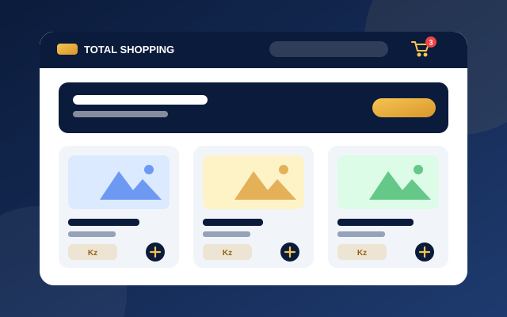
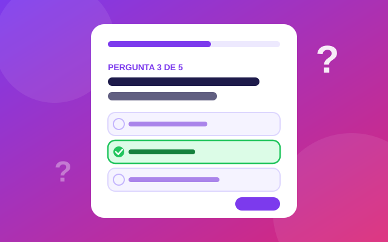
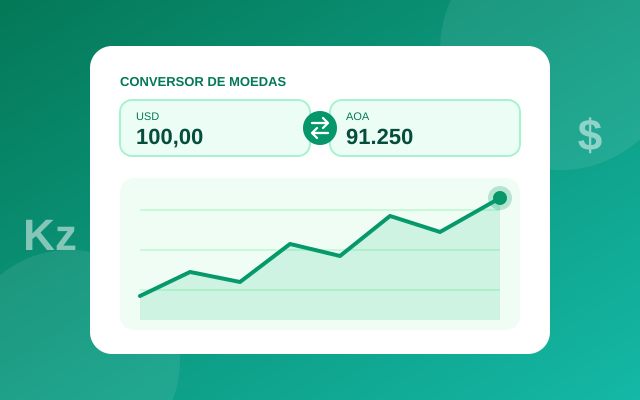
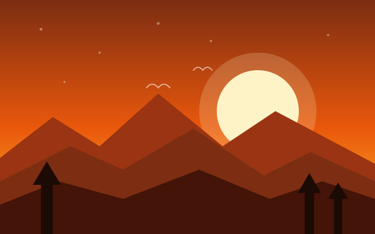

Formação e aprendizagem contínua
Desenvolvimento de software e tecnologias web.
ESTUDANTE · DESENVOLVEDOR DE SOFTWARE
Transformo problemas reais em soluções digitais, com foco em desenvolvimento web, JavaScript, APIs e interfaces funcionais.
Sou estudante e desenvolvedor em aprendizagem contínua. Gosto de construir aplicações práticas, testar ideias e evoluir os meus projetos a partir de problemas concretos.
Desenvolvimento de software e tecnologias web.
HTML, CSS, JavaScript, APIs e criação de aplicações.
PORTFÓLIO

Plataforma de loja online com painéis para administrador, atendente e cliente, pedidos, stock, favoritos, avaliações, integração com WhatsApp e relatórios financeiros em PDF. Preços em Kwanza.
Visitar o siteSistema web direcionado ao contexto escolar, com estrutura organizada por funcionalidades e preparado para evolução.
Abrir projeto
Aplicação de perguntas e respostas com páginas de perguntas e resultados, scripts e recursos multimédia.
Abrir projeto
Aplicação de conversão de moedas com interface web, JavaScript e integração com API externa.
Abrir projeto
Site desenvolvido para praticar composição visual, imagens e efeito Parallax em páginas web.
Abrir projeto